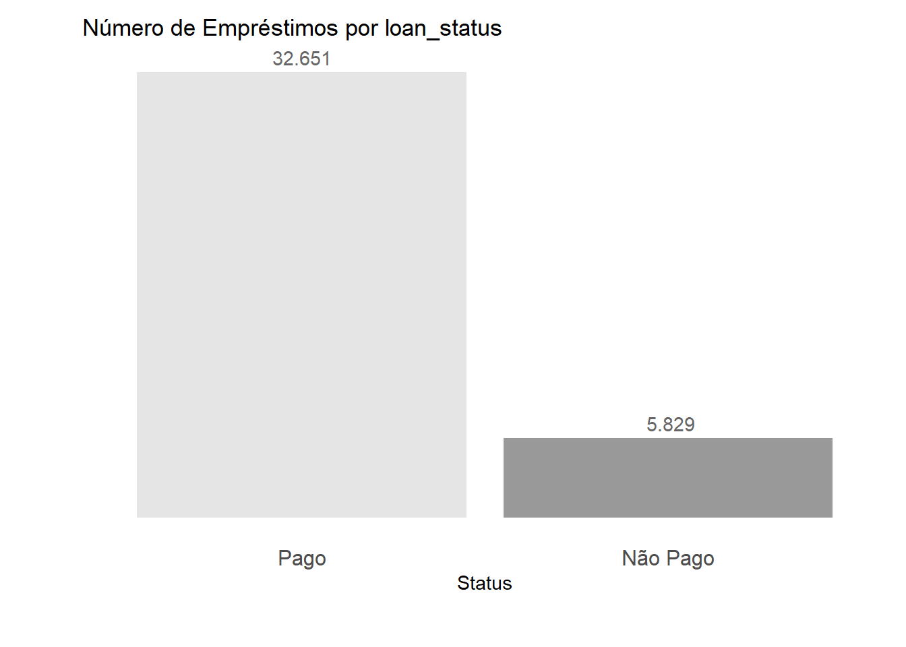
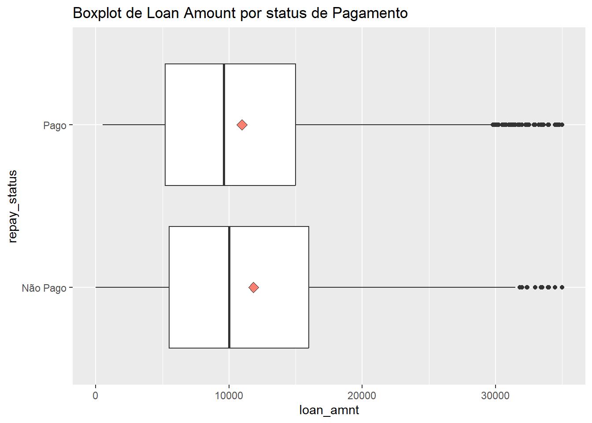
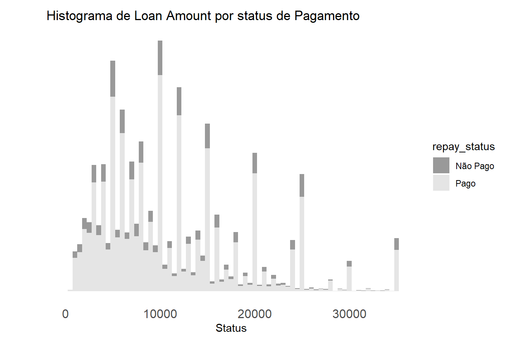

CE329: Trabalho Final: Powerlifting
Inclua aqui um resumo sobre o seu projeto. Esse resumo deve ter entre 150 e 200 palavras. Deve apresentar a motivação para o estudo, uma breve introdução, a metodologia aplicada, resultados e uma breve conclusão. Não deve conter referências bibliográficas.
Introdução
O powerlifting é um esporte de força que envolve a competição em três movimentos principais: agachamento (squat), supino (bench press) e levantamento terra (deadlift). O objetivo do powerlifting é levantar a maior quantidade de peso possível em cada um desses três movimentos.
Agachamento (Squat): Neste movimento, o atleta segura uma barra com peso posicionada nas costas e se agacha até que os quadris fiquem abaixo do nível dos joelhos e, em seguida, retorna à posição inicial. A técnica correta, estabilidade e força nas pernas e na região lombar são essenciais para um agachamento bem-sucedido.
Supino (Bench Press): No supino, o atleta deita em um banco plano e levanta uma barra com peso em direção ao teto, abaixando-a até que toque o peito e, em seguida, a levanta novamente. A força nos músculos peitorais, ombros e tríceps é crucial para um bom desempenho no supino.
Levantamento Terra (Deadlift): O levantamento terra envolve o atleta levantando uma barra do chão até ficar em pé, com os quadris e joelhos estendidos. Diferentemente dos outros dois movimentos, não há nenhuma pausa ou ponto intermediário durante o movimento. A força nas costas, pernas e aperto das mãos são aspectos importantes para um levantamento terra eficaz.
As competições de powerlifting são organizadas em categorias de peso, gênero e idade, e os competidores têm três tentativas para realizar cada movimento, com o objetivo de levantar a maior quantidade de peso possível. O peso máximo levantado em cada movimento é somado para determinar o total do competidor.
O objetivo desse trabalho é, utilizando a base de dados disponibilizada no site Kaggle, openpowerlifting.csv, treinar e otimizar um modelo que será utilizado para fazer previsões sobre o sucesso de levantadores de powerlifting com base em suas características.
Por exemplo, dado um atleta de 26 anos, 63kg, 1,72cm, etc., ele seria capaz de levantar 150kg no levantamento terra? Explorando a importância relativa de diferentes características para entender quais fatores influenciam mais o sucesso de predição do modelo.
Materiais e Métodos
A fim de analisar o montante de cada empréstimo, iniciamos lendo os banco de dados Emprestimos.csv. Os dados foram coletados por Shizuno em 19/10/2023 (Arvidsson, 2023).
Variáveis
Com o objetivo de facilitar o entendimento das variáveis presentes no banco de dados, apresentamos as colunas com uma breve descrição na tabela abaixo:
| Variable | Descrição |
|---|---|
| id | Identificador único para cada empréstimo |
| member_id | Identificador único para cada mutuário |
| loan_amnt | O valor do empréstimo solicitado pelo mutuário |
| funded_amnt | O valor total comprometido para esse empréstimo no momento em que foi financiado |
| funded_amnt_inv | O valor total comprometido por investidores para esse empréstimo no momento em que foi financiado |
| term | O número de pagamentos do empréstimo, em meses Os valores podem ser 36 ou 60 |
| int_rate | A taxa de juros do empréstimo |
| installment | As parcelas mensais ($) devidas pelo mutuário se o empréstimo for financiado |
| emp_length | O tempo de emprego do mutuário |
| home_ownership | O status de propriedade de moradia fornecido pelo mutuário |
| annual_inc | A renda anual auto-relatada fornecida pelo mutuário durante o registro |
| verification_status | O status de verificação da renda e outros detalhes do mutuário |
| issue_d | O mês em que o empréstimo foi financiado |
| loan_status | O status atual do empréstimo |
| purpose | O objetivo do empréstimo |
| zip_code | O código postal do mutuário |
| addr_state | O estado fornecido pelo mutuário na aplicação de empréstimo |
| dti | A relação dívida/receita (DTI), calculada usando os pagamentos mensais totais do mutuário nas obrigações de dívida totais (excluindo hipoteca e o empréstimo solicitado) dividida pela renda mensal auto-relatada do mutuário |
| delinq_2yrs | O número de vezes que o mutuário ficou com atraso de mais de 30 dias em um pagamento nos últimos 2 anos |
| earliest_cr_line | A data de abertura da primeira linha de crédito relatada do mutuário |
| inq_last_6mths | O número de consultas feitas por credores nos últimos 6 meses pelo mutuário |
| mths_since_last_delinq | O número de meses desde a última vez que o mutuário ficou em atraso em um pagamento |
| open_acc | O número de linhas de crédito abertas no arquivo de crédito do mutuário |
| pub_rec | O número de registros públicos prejudiciais ao mutuário |
| revol_bal | Saldo total de crédito rotativo |
| revol_util | Taxa de utilização da linha rotativa, indicando a quantidade de crédito que o mutuário está usando em relação a todo o crédito rotativo disponível |
| total_acc | O número total de linhas de crédito atualmente no arquivo de crédito do mutuário |
| total_pymnt | Pagamentos totais recebidos até a data para o valor total financiado |
| total_pymnt_inv | Pagamentos totais recebidos até a data para a parte do valor total financiado pelos investidores |
| total_rec_prncp | Principal recebido até a data |
| total_rec_int | Juros recebidos até a data |
| last_pymnt_d | O mês em que o último pagamento foi recebido |
| last_pymnt_amnt | O valor total do último pagamento recebido |
| next_pymnt_d | A data programada para o próximo pagamento |
| last_credit_pull_d | O mês mais recente em que a plataforma de empréstimo puxou informações de crédito para este empréstimo |
| repay_fail | Uma variável que indica o sucesso ou falha no pagamento do empréstimo, provavelmente como uma bandeira binária (por exemplo, 1 para falha, 0 para sucesso) |
…
Resultados e Discussão
Limpeza dos Dados
Primeiramente iniciamos com a verificação de valores faltantes na base de dados
Código
# Verificando os valores vazio em cada coluna
missing_values <- sapply(Emprestimos, function(x) sum(is.na(x)))
missing_percentage <- (missing_values / nrow(Emprestimos)) * 100
missing_data <- data.frame(
Missing_Values = missing_values,
Percentage = paste0(round(missing_percentage, 2), "%") # Add "%" symbol
)
# Mostrando os valores vazios em cada coluna
print(missing_data) Missing_Values Percentage
V1 0 0%
id 0 0%
member_id 0 0%
loan_amnt 1 0%
funded_amnt 1 0%
funded_amnt_inv 1 0%
term 0 0%
int_rate 0 0%
installment 1 0%
emp_length 0 0%
home_ownership 0 0%
annual_inc 2 0.01%
verification_status 0 0%
issue_d 0 0%
loan_status 0 0%
purpose 0 0%
zip_code 0 0%
addr_state 0 0%
dti 0 0%
delinq_2yrs 1 0%
earliest_cr_line 0 0%
inq_last_6mths 1 0%
mths_since_last_delinq 24363 63.31%
open_acc 1 0%
pub_rec 1 0%
revol_bal 4 0.01%
revol_util 59 0.15%
total_acc 1 0%
total_pymnt 1 0%
total_pymnt_inv 1 0%
total_rec_prncp 1 0%
total_rec_int 1 0%
last_pymnt_d 71 0.18%
last_pymnt_amnt 1 0%
next_pymnt_d 35097 91.21%
last_credit_pull_d 3 0.01%
repay_fail 0 0%Devido a grande frequência de valores faltantes para as colunas “mths_since_last_delinq” e “next_pymnt_d”, ambas serão removidas da análise
Montante do Empréstimo
Código
# Alterando loan status para algo mais amigável
Emprestimos <- Emprestimos %>%
mutate(repay_status = ifelse(repay_fail == 1, "Não Pago", "Pago"))
# Criando o gráfico para mostrar o número de emprestimos por status da coluna "repay_fail"
bar_graph <- Emprestimos %>%
group_by(repay_status) %>%
count() %>%
mutate(repay_status = factor(repay_status, levels = c("Pago", "Não Pago"))) %>%
ggplot(aes(x = repay_status, y = n, fill = repay_status)) +
geom_bar(stat = "identity") +
labs(
title = "Número de Empréstimos por loan_status",
x = "Status",
y = ""
) +
scale_fill_manual(values = c("Não Pago" = "gray60", "Pago" = "gray90")) +
theme_minimal() +
theme(
axis.text.y = element_blank(),
panel.grid.major = element_blank(),
panel.grid.minor = element_blank(),
axis.text.x = element_text(size = 12),
plot.margin = ggplot2::margin(l = 30, r = 10, b = 30, t = 10, unit = "pt") # Explicitly use ggplot2::margin
) +
geom_text(aes(label = format(n, big.mark = ".")), vjust = -0.5, color = "gray40") +
guides(fill = FALSE)
print(bar_graph)
Código
subset_df <- Emprestimos[Emprestimos$repay_status %in% c('Não Pago', 'Pago'), ]
boxplot <- ggplot(subset_df, aes(x = loan_amnt, y = repay_status)) +
geom_boxplot() +
stat_summary(fun = mean, geom = "point", shape = 23, size = 3, fill = "salmon")+
labs(title = "Boxplot de Loan Amount por status de Pagamento")
histogram <- ggplot(subset_df, aes(x = loan_amnt, fill = repay_status)) +
geom_histogram(binwidth = 500) +
labs(
title = "Histograma de Loan Amount por status de Pagamento",
x = "Status",
y = ""
) +
scale_fill_manual(values = c("Não Pago" = "gray60", "Pago" = "gray90")) +
theme_minimal()+
theme(
axis.text.y = element_blank(),
panel.grid.major = element_blank(),
panel.grid.minor = element_blank(),
axis.text.x = element_text(size = 12),
plot.margin = margin(l = 30, r = 10, b = 30, t = 10, unit = "pt")
)
print(boxplot)

Podemos observar no boxplot uma diferença visual entre a média de empréstimos que foram pagos com os que não foram pagos
Código
Não Pago Pago
11835.24 10962.52 Assumimos então a hipótese nula: “Não há variância entre montante do empréstimo (loan amount) quando comparamos Pago e Não Pago”. Caso o p-valor seja menor que 0.05, podemos rejeitar a hipótese (Moore, 2016)
Código
F test to compare two variances
data: loan_amnt by repay_status
F = 1.1954, num df = 5828, denom df = 32649, p-value < 2.2e-16
alternative hypothesis: true ratio of variances is not equal to 1
95 percent confidence interval:
1.149505 1.243797
sample estimates:
ratio of variances
1.195393 A média para empréstimos que foram pagos Como 2.2e-16 < 0.05 rejeitamos que “Não há variância entre montante do empréstimo (loan amount) quando comparamos Pago e Não Pago” sugerindo que há uma variância significativa.
Modelo de Previsão
Utilizando random forest buscamos entender como as variáveis “annual_inc”, “loan_amnt”, “int_rate”, “installment” e “total_pymnt_inv” predizem a variável “repay_fail” e com qual acurácia (Gareth James, 2013)
Código
annual_inc loan_amnt int_rate installment total_pymnt_inv repay_fail
1: 0 0 0.00 0.00 0.00 1
2: 20004 2500 13.98 85.42 3075.29 0
3: 59000 5000 15.95 175.67 2948.76 1
4: 53796 7000 9.91 225.58 8082.39 0
5: 30000 2000 5.42 60.32 2161.66 0
6: 675048 3600 10.25 116.59 4206.03 0Dividindo a base de dados em 70% treino e 30% teste
Código
annual_inc loan_amnt int_rate installment total_pymnt_inv repay_fail
1: 0 0 0.00 0.00 0.00 1
2: 59000 5000 15.95 175.67 2948.76 1
3: 53796 7000 9.91 225.58 8082.39 0
4: 30000 2000 5.42 60.32 2161.66 0
5: 675048 3600 10.25 116.59 4206.03 0
6: 77736 8000 6.03 243.49 8724.97 0Aplicando o random forest
Código
Accuracy: 0.9169193 A acurácia obtida foi elevada o que confere mair confiança na predição do pagamento dos empréstimo
Conclusões e Persperctivas Futuras
Em conclusão, a análise dos dados de inadimplência de empréstimos proporcionou insights valiosos sobre a relação entre o montante do empréstimo e a probabilidade de pagamento. Observamos diferenças significativas na distribuição do montante entre empréstimos pagos e não pagos, sugerindo que esta variável pode ser um indicador relevante na avaliação de riscos de inadimplência.
A aplicação do modelo Random Forest para prever a variável “repay_fail” demonstrou uma acurácia substancial, indicando a eficácia do modelo na classificação dos pagamentos. A inclusão de variáveis como renda anual, taxa de juros e valor total pago pelos investidores contribuiu para a robustez do modelo.
Como perspectivas futuras, a inclusão de mais variáveis na base de dados relacionadas com o perfil dos clientes, a construção de um Shiny App utilizando o modelo de classificação construído e treinamento do modelo com variáveis mais complexas e relevantes.